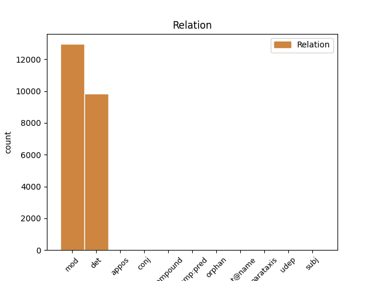
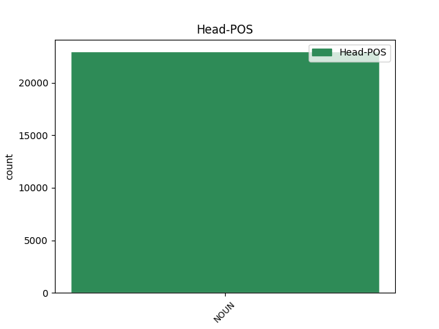
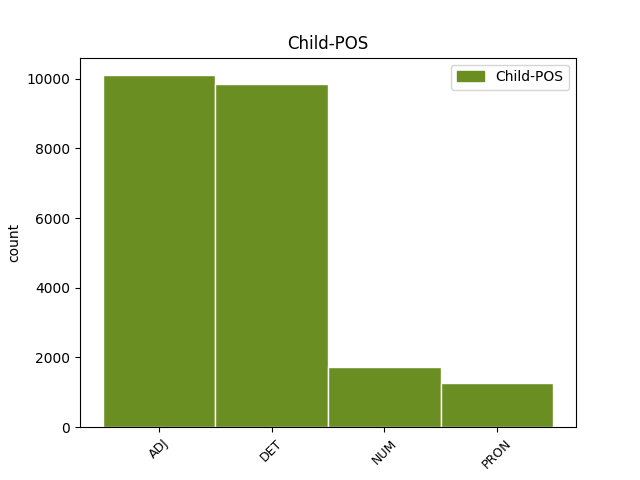

Distribution of features within this leaf



Agreement Rules sorted by frequency.
When the head token is NOUN and the dependent token is ADJ.
1 Men _ _ _ _ 0 _ _ _
2 me _ _ _ _ 0 _ _ _
3 har _ _ _ _ 0 _ _ _
4 aldri _ _ _ _ 0 _ _ _
5 hatt _ _ _ _ 0 _ _ _
6 livstrugande _ _ _ _ 0 _ _ _
7 skadar _ _ _ _ 0 _ _ _
8 eller _ _ _ _ 0 _ _ _
9 hatt _ _ _ _ 0 _ _ _
10 store stor ADJ _ Degree=Pos|Number=Plur 11 mod _ _
11 leiteaksjonar leiteaksjon NOUN _ Definite=Ind|Gender=Masc|Number=Plur 0 _ _ _
12 i _ _ _ _ 0 _ _ _
13 påskene _ _ _ _ 0 _ _ _
14 , _ _ _ _ 0 _ _ _
15 fortel _ _ _ _ 0 _ _ _
16 Frantzen _ _ _ _ 0 _ _ _
17 . _ _ _ _ 0 _ _ _
When the head token is NOUN and the dependent token is DET.
1 - _ _ _ _ 0 _ _ _
2 Me _ _ _ _ 0 _ _ _
3 har _ _ _ _ 0 _ _ _
4 hatt _ _ _ _ 0 _ _ _
5 litt _ _ _ _ 0 _ _ _
6 brotskadar _ _ _ _ 0 _ _ _
7 og _ _ _ _ 0 _ _ _
8 i _ _ _ _ 0 _ _ _
9 skibakken _ _ _ _ 0 _ _ _
10 på _ _ _ _ 0 _ _ _
11 Halbjønnsekken _ _ _ _ 0 _ _ _
12 har _ _ _ _ 0 _ _ _
13 me _ _ _ _ 0 _ _ _
14 hatt _ _ _ _ 0 _ _ _
15 nokre nokon DET _ Number=Plur|PronType=Ind 16 det _ _
16 kuttskadar kuttskade NOUN _ Definite=Ind|Gender=Masc|Number=Plur 0 _ _ _
17 etter _ _ _ _ 0 _ _ _
18 fall _ _ _ _ 0 _ _ _
19 på _ _ _ _ 0 _ _ _
20 ski _ _ _ _ 0 _ _ _
21 . _ _ _ _ 0 _ _ _
When the head token is NOUN and the dependent token is NUM.
1 Han _ _ _ _ 0 _ _ _
2 seier _ _ _ _ 0 _ _ _
3 han _ _ _ _ 0 _ _ _
4 ikkje _ _ _ _ 0 _ _ _
5 har _ _ _ _ 0 _ _ _
6 heilt _ _ _ _ 0 _ _ _
7 oversikten _ _ _ _ 0 _ _ _
8 over _ _ _ _ 0 _ _ _
9 kor _ _ _ _ 0 _ _ _
10 mange _ _ _ _ 0 _ _ _
11 påsker _ _ _ _ 0 _ _ _
12 han _ _ _ _ 0 _ _ _
13 har _ _ _ _ 0 _ _ _
14 vore _ _ _ _ 0 _ _ _
15 med _ _ _ _ 0 _ _ _
16 Raude _ _ _ _ 0 _ _ _
17 Kross _ _ _ _ 0 _ _ _
18 på _ _ _ _ 0 _ _ _
19 Skafsåheia _ _ _ _ 0 _ _ _
20 , _ _ _ _ 0 _ _ _
21 men _ _ _ _ 0 _ _ _
22 meiner _ _ _ _ 0 _ _ _
23 det _ _ _ _ 0 _ _ _
24 minst _ _ _ _ 0 _ _ _
25 må _ _ _ _ 0 _ _ _
26 vera _ _ _ _ 0 _ _ _
27 ti ti NUM _ Number=Plur|NumType=Card 28 mod _ _
28 gonger gong NOUN _ Definite=Ind|Gender=Masc|Number=Plur 0 _ _ _
29 . _ _ _ _ 0 _ _ _
When the head token is NOUN and the dependent token is PRON.
1 Her _ _ _ _ 0 _ _ _
2 kan _ _ _ _ 0 _ _ _
3 dei _ _ _ _ 0 _ _ _
4 få _ _ _ _ 0 _ _ _
5 fylt _ _ _ _ 0 _ _ _
6 opp _ _ _ _ 0 _ _ _
7 vassflaskene _ _ _ _ 0 _ _ _
8 sine _ _ _ _ 0 _ _ _
9 og _ _ _ _ 0 _ _ _
10 ungane _ _ _ _ 0 _ _ _
11 er _ _ _ _ 0 _ _ _
12 veldig _ _ _ _ 0 _ _ _
13 glade _ _ _ _ 0 _ _ _
14 for _ _ _ _ 0 _ _ _
15 saftstasjonen saftstasjon NOUN _ Definite=Def|Gender=Masc|Number=Sing 0 _ _ _
16 vår vår PRON _ Gender=Masc|Number=Sing|Poss=Yes|PronType=Prs 15 mod _ SpaceAfter=No
17 , _ _ _ _ 0 _ _ _
18 seier _ _ _ _ 0 _ _ _
19 Frantzen _ _ _ _ 0 _ _ _
20 . _ _ _ _ 0 _ _ _
Disagree Examples:
1 Det _ _ _ _ 0 _ _ _
2 same _ _ _ _ 0 _ _ _
3 kan _ _ _ _ 0 _ _ _
4 seiast _ _ _ _ 0 _ _ _
5 om _ _ _ _ 0 _ _ _
6 liknande _ _ _ _ 0 _ _ _
7 uttrykk _ _ _ _ 0 _ _ _
8 som _ _ _ _ 0 _ _ _
9 ein _ _ _ _ 0 _ _ _
10 finn _ _ _ _ 0 _ _ _
11 i _ _ _ _ 0 _ _ _
12 Kol _ _ _ _ 0 _ _ _
13 , _ _ _ _ 0 _ _ _
14 men _ _ _ _ 0 _ _ _
15 ikkje _ _ _ _ 0 _ _ _
16 andre _ _ _ _ 0 _ _ _
17 stader stad NOUN _ Definite=Ind|Gender=Masc|Number=Plur 0 _ _ _
18 , _ _ _ _ 0 _ _ _
19 så _ _ _ _ 0 _ _ _
20 mykje mykje ADJ _ Definite=Ind|Degree=Pos|Gender=Neut|Number=Sing 17 orphan _ SpaceAfter=No
21 . _ _ _ _ 0 _ _ _
1 Den _ _ _ _ 0 _ _ _
2 verkeleg _ _ _ _ 0 _ _ _
3 viktige _ _ _ _ 0 _ _ _
4 og _ _ _ _ 0 _ _ _
5 sentrale _ _ _ _ 0 _ _ _
6 " _ _ _ _ 0 _ _ _
7 løyndomen _ _ _ _ 0 _ _ _
8 " _ _ _ _ 0 _ _ _
9 ( _ _ _ _ 0 _ _ _
10 mysterion _ _ _ _ 0 _ _ _
11 ) _ _ _ _ 0 _ _ _
12 er _ _ _ _ 0 _ _ _
13 Kristus _ _ _ _ 0 _ _ _
14 og _ _ _ _ 0 _ _ _
15 evangeliet _ _ _ _ 0 _ _ _
16 om _ _ _ _ 0 _ _ _
17 han _ _ _ _ 0 _ _ _
18 ( _ _ _ _ 0 _ _ _
19 som _ _ _ _ 0 _ _ _
20 altså _ _ _ _ 0 _ _ _
21 ikkje _ _ _ _ 0 _ _ _
22 skal _ _ _ _ 0 _ _ _
23 snevrast _ _ _ _ 0 _ _ _
24 inn _ _ _ _ 0 _ _ _
25 til _ _ _ _ 0 _ _ _
26 " _ _ _ _ 0 _ _ _
27 lov _ _ _ _ 0 _ _ _
28 og _ _ _ _ 0 _ _ _
29 evangelium _ _ _ _ 0 _ _ _
30 , _ _ _ _ 0 _ _ _
31 " _ _ _ _ 0 _ _ _
32 som _ _ _ _ 0 _ _ _
33 de _ _ _ _ 0 _ _ _
34 skjønar _ _ _ _ 0 _ _ _
35 - _ _ _ _ 0 _ _ _
36 og _ _ _ _ 0 _ _ _
37 i _ _ _ _ 0 _ _ _
38 alle all DET _ Number=Sing|PronType=Tot 39 det _ _
39 fall fall NOUN _ Definite=Ind|Gender=Neut|Number=Plur 0 _ _ _
40 ikkje _ _ _ _ 0 _ _ _
41 til _ _ _ _ 0 _ _ _
42 " _ _ _ _ 0 _ _ _
43 lov _ _ _ _ 0 _ _ _
44 og _ _ _ _ 0 _ _ _
45 evangelium _ _ _ _ 0 _ _ _
46 " _ _ _ _ 0 _ _ _
47 av _ _ _ _ 0 _ _ _
48 reformatorisk _ _ _ _ 0 _ _ _
49 type _ _ _ _ 0 _ _ _
50 , _ _ _ _ 0 _ _ _
51 sjølv _ _ _ _ 0 _ _ _
52 om _ _ _ _ 0 _ _ _
53 det _ _ _ _ 0 _ _ _
54 også _ _ _ _ 0 _ _ _
55 er _ _ _ _ 0 _ _ _
56 mykje _ _ _ _ 0 _ _ _
57 godt _ _ _ _ 0 _ _ _
58 å _ _ _ _ 0 _ _ _
59 hente _ _ _ _ 0 _ _ _
60 her _ _ _ _ 0 _ _ _
61 ) _ _ _ _ 0 _ _ _
62 . _ _ _ _ 0 _ _ _
1 Men _ _ _ _ 0 _ _ _
2 det _ _ _ _ 0 _ _ _
3 var _ _ _ _ 0 _ _ _
4 sikkert sikker ADJ _ Definite=Ind|Degree=Pos|Gender=Neut|Number=Sing 6 mod _ _
5 femten _ _ _ _ 0 _ _ _
6 år år NOUN _ Definite=Ind|Gender=Neut|Number=Plur 0 _ _ _
7 sidan _ _ _ _ 0 _ _ _
8 sist _ _ _ _ 0 _ _ _
9 eg _ _ _ _ 0 _ _ _
10 var _ _ _ _ 0 _ _ _
11 med _ _ _ _ 0 _ _ _
12 på _ _ _ _ 0 _ _ _
13 å _ _ _ _ 0 _ _ _
14 bake _ _ _ _ 0 _ _ _
15 pepperkaker _ _ _ _ 0 _ _ _
16 ; _ _ _ _ 0 _ _ _
17 - _ _ _ _ 0 _ _ _
18 ) _ _ _ _ 0 _ _ _
1 ( _ _ _ _ 0 _ _ _
2 Slik _ _ _ _ 0 _ _ _
3 er _ _ _ _ 0 _ _ _
4 i _ _ _ _ 0 _ _ _
5 alle all DET _ Number=Sing|PronType=Tot 6 det _ _
6 fall fall NOUN _ Definite=Ind|Gender=Neut|Number=Plur 0 _ _ _
7 utviklinga _ _ _ _ 0 _ _ _
8 i _ _ _ _ 0 _ _ _
9 dag _ _ _ _ 0 _ _ _
10 ) _ _ _ _ 0 _ _ _
11 . _ _ _ _ 0 _ _ _
1 Kanskje _ _ _ _ 0 _ _ _
2 er _ _ _ _ 0 _ _ _
3 ikkje _ _ _ _ 0 _ _ _
4 norsk _ _ _ _ 0 _ _ _
5 protestantisk _ _ _ _ 0 _ _ _
6 kristenhet _ _ _ _ 0 _ _ _
7 tenleg _ _ _ _ 0 _ _ _
8 som _ _ _ _ 0 _ _ _
9 eit _ _ _ _ 0 _ _ _
10 rammeverk _ _ _ _ 0 _ _ _
11 for _ _ _ _ 0 _ _ _
12 den _ _ _ _ 0 _ _ _
13 typen _ _ _ _ 0 _ _ _
14 arbeid _ _ _ _ 0 _ _ _
15 - _ _ _ _ 0 _ _ _
16 i _ _ _ _ 0 _ _ _
17 alle all DET _ Number=Sing|PronType=Tot 18 det _ _
18 fall fall NOUN _ Definite=Ind|Gender=Neut|Number=Plur 0 _ _ _
19 må _ _ _ _ 0 _ _ _
20 ein _ _ _ _ 0 _ _ _
21 hente _ _ _ _ 0 _ _ _
22 inn _ _ _ _ 0 _ _ _
23 impulsar _ _ _ _ 0 _ _ _
24 frå _ _ _ _ 0 _ _ _
25 andre _ _ _ _ 0 _ _ _
26 stader _ _ _ _ 0 _ _ _
27 . _ _ _ _ 0 _ _ _